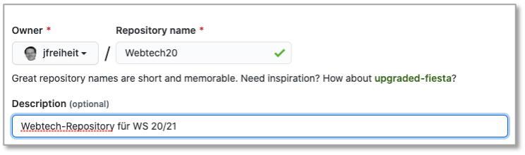

Werkzeuge¶
Integrated Development Environment (IDE)¶
Für die Webentwicklung stehen Ihnen viele gute Entwicklungswerkzeuge zur Verfügung. Für welches Sie sich entscheiden, bleibt Ihnen überlassen. Hier eine Auswahl der aus meiner Sicht besten Entwicklungswerkzeuge:
Für die Tools von Jetbrains benötigen Sie einen Account. Mit Ihrer HTW-E-Mail-Adresse bekommen Sie aber eine kostenlose Hochschullizenz und können so die Enterprise-Versionen kostenlos nutzen. Sublime Text ist Shareware und fragt regelmäßig, ob Sie spenden möchten.
Ich werde in den Vorlesungen und Übungen Visual Studio Code verwenden. Visual Studio Code ist auch auf den Laborrechnern verfügbar.
Git¶
Git ist ein Werkzeug zur Versionskontrolle und zum gemeinsamen Entwickeln in Teams. Nach jeder Übung committen Sie Ihre Lösung und pushen Sie auf einen zentralen, netzbasierten Dienst, wie z.B.
Gewähren Sie mir Zugriff auf Ihr zentrales Repository. Auf GitHub finden Sie mich unter jfreiheit bzw. meiner E-Mail-Adresse joern.freiheit@htw-berlin.de.
Repository initial anlegen¶
Wir zeigen das Erstellen eines Repositories exemplarisch für GitHub. Die Beispiele hier sind für das Jahr 2020, funktionieren aber noch genau so. Ersetzen Sie einfach 20 durch 24.
Option A: Repository zunächst in Github anlegen, dann clonen¶
Als erstes loggen Sie sich in Github ein. Dort gibt es in der linken oberen Ecke einen Button New, siehe Bild:

Klicken Sie darauf und geben Sie die notwendigen Informationen ein (Beschreibung ist optional):

Sie können wählen, ob das Repository Public (für alle lesbar) oder Private (nur für Eingeladene lesbar) sein soll. Klicken Sie auf den Button Create repository. Kopieren Sie sich nun den Remote-Pfad in Ihre Zwischenablage, hier https://github.com/jfreiheit/Webtech20.git.
Wechseln Sie nun lokal in Ihr Terminal und wechseln in Ihren Workspace Ihrer IDE. Ich wähle hier den Pfad /Users/jornfreiheit/Sites, da dieser Pfad gleichzeitig mein DocumentRootist, d.h., wenn ich localhost im Browser aufrufe, dann wird in diesem Pfad nach den Webseiten "gesucht".
Geben Sie dort nun ein:
jornfreiheit@Jorns-MacBook-Pro Sites % git clone https://github.com/jfreiheit/Webtech20.git
Cloning into 'Webtech20'...
warning: You appear to have cloned an empty repository.
also git clone gefolgt von dem Remote-Pfad aus Ihrer Zwischenablage. Wenn Sie in Github weder README.md noch .gitignore ausgewählt hatten, dann erhalten Sie eine Warnung, dass Sie ein leeres Repository clonen. Das ist aber kein Problem. Sie können aber auch beide Datein in Ihr Repository integrieren, die .gitignoreverwenden wir auf jeden Fall. In dem Ordner, in den Sie geclont haben, wird nun ein Ordner Webtech20 angelegt. Diesen Ordner können Sie nun als Workspace Ihrer IDE verwenden. Also z.B. mit IntelliJ IDEA:

öffnen Sie das Projekt (Open or import) Webtech20. Es erscheint:

Hier können Sie wählen, dass neue Dateien immer automatisch zum Git-Repoitory hinzugefügt werden - das können Sie aber auch immer manuell machen (git add .). Angenommen, wir erstellen uns jetzt eine Datei index.html (File --> New --> HTML File) mit:
<!DOCTYPE html>
<html lang="en">
<head>
<meta charset="UTF-8">
<title>Erster Test</title>
</head>
<body>
<h1>Willkommen</h1>
<p>Das ist die Datei index.html. Sie liegt bei mir
unter /Users/jornfreiheit/Sites/Webtech20.
Der Ordner /Users/jornfreiheit/Sites ist mein
DocumentRoot, deshalb kann ich diese Datei im Browser
unter localhost/Webtech20/index.html aufrufen.
Der Ordner Webtech20 wird von Git verwaltet. </p>
</body>
</html>
Da der Ordner Sites bei mir DocumentRoot ist und sich der Webtech20-Ordner (in dem die neue index.html ist) direkt darunter befindet, kann ich mir die Datei im Browser unter localhost/Webtech20/index.html anzeigen lassen. Das nat nichts mit Git zu tun, sondern mit dem DocumentRoot des lokalen Webservers.
Wir fügen im Terminal im Webtech20-Ordner diese Datei dem Git-Repoitory hinzu (falls noch nicht automatisch durch unsere IDE passiert):
jornfreiheit@Jorns-MacBook-Pro Webtech20 % git add index.html
jornfreiheit@Jorns-MacBook-Pro Webtech20 % git status
On branch master
No commits yet
Changes to be committed:
(use "git rm --cached <file>..." to unstage)
new file: .idea/.gitignore
new file: .idea/Webtech20.iml
new file: .idea/misc.xml
new file: .idea/modules.xml
new file: .idea/vcs.xml
new file: index.html
jornfreiheit@Jorns-MacBook-Pro Webtech20 %
Außerdem sollten wir den .idea-Ordner von der Git-Verwaltung ausschließen. Dazu erstellen wir im Webtech20-Ordner eine Datei .gitignore, falls diese noch nicht existiert und tragen dort .idea ein. Fügen Sie die Datei .gitignore Ihrem repository hinzu, führen Sie Ihr erstes Commit aus und pushen Ihr Repository nach Github:
In Github erkenn Sie, dass commit und push geklappt haben:

In Zukunft fügen Sie Ihre neu erstellten Dateien und Ordner immer mit git add . hinzu, erstellen neue Commits mit git commit -m "Commit-Nachricht" und pushen dann nach Github mit git push.
Option B: Repository in Github anlegen und lokal anlegen, dann verbinden¶
- Legen Sie sich wie oben beschrieben ein Repository unter GitHub an. Kopieren Sie die Remote-URL (z.B.
https://github.com/jfreiheit/Webtech20.git). - Erstellen Sie sich lokal einen Ordner (am besten in Ihrem DocumentRoot), z.B.
Webtech20(mkdir Webtech20). Wechseln Sie in diesen Ordner (cd Webtech20) und führen Sie dortgit initaus. Es entsteht ein.git-Ordner. - Fügen Sie diesem lokalen Repository alle Ihre bisher in
Webtech20erstellten Dateien mitgit add .hinzu. - Erstellen Sie ein Commit, z.B.
git commit -m "initial commit". - Verbinden Sie Ihr lokales Repository mit dem remote-Repository auf Github durch
git remote add origin https://github.com/jfreiheit/Webtech20.git(fürhttps://...setzen Sie Ihre Remote-URL ein). - Pushen Sie die Dateien auf Ihr remote-Repository:
git push --set-upstream origin master.
In Zukunft fügen Sie Ihre neu erstellten Dateien und Ordner immer mit git add . hinzu, erstellen neue Commits mit git commit -m "Commit-Nachricht" und pushen dann nach Github mit git push.
Developer Tools¶
Alle Browser sind mit Werkzeugen ausgestattet, die es Web-Entwicklerinnen ermöglichen, im Browser Informationen über die Webanwendung zu erhalten. Für einige Browser ist hier angegeben, wie Sie diese Entwicklerwerkzeuge einschalten.
Chrome¶
In Chrome sind die Entwicklerwerkzeuge unter dem Menü neben der URL-Eingabezeile unter Weitere Tools --> Entwicklertools verfügbar (siehe folgendes Bild).
Die eingeschalteten Entwicklertools offenbaren Ihnen umfassende Informationen über die angezeigte Webseite. Besonders interessant ist der Reiter Console:

oder auch der Reiter Elements, der Ihnen sowohl den HTML- als auch den jeweiligen CSS-Code anzeigt:

Weiterführende Informationen erhalten Sie unter https://developers.google.com/web/tools/chrome-devtools.
Firefox¶
Zu den Entwicklertools von Firefox finden Sie Informationen auf
Die Entwicklertools lassen sich in Firefox öffnen unter Web-Entwickler --> Inspektor:

Sie haben die gleichen Möglichkeiten der Ananlyse wie bei Chrome, bei Safari und anderen Browsern:

Safari¶
In Safari müssen Sie zunächst den Menüeintrag Entwickler aktivieren. Eine Anleitung dazu finden Sie z.B. hier auf heise . Weitere Informationen zu den Entwicklertools erhalten Sie z.B. auf

Postman¶
Postman ist eine Anwendung, um Schnittstellen (Application Programming Interface - API), die das Backend bereitstellt, zu entwickeln und zu testen. Sie finden Postman unter postman.com. Wir beschränken uns zunächst auf den Postman API Client. Laden Sie das Tool herunter und installieren es. Rufen Sie Postman auf und geben in das Eingabefeld https://postman-echo.com/get ein. Lassen Sie die Auswahl links daneben auf GET und klicken auf den Send-Button. Es erscheint folgendes Bild:

Neben der GET-Anfrage sind folgende weitere Anfragen (siehe auch HTML → HTTP) möglich:
POST- sendet Daten zur Verarbeitung an den WebserverPUT- lädt existierende Daten (eine Datei) auf den ServerPATCH- ändert Daten (eine Datei), ohne - wie beiPUT- diese vollständig zu ersetzenDELETE- löscht die angegebenen Daten auf dem Server
Node.js¶
Node.js ist eine JavaScript-Laufzeitumgebung. Node.js reagiert auf Ereignisse und antwortet asynchron. Das bedeutet, dass die Ausführung einer Ereignisbearbeitung nicht zum Blockieren der Laufzeitumgebung führt, sondern nebenläufig weitere Ereignisse eintreffen können, die ebenfalls asynchron behandelt werden. Dies geschieht mithilfe des Callback-Patterns. Callbacks sind Funktionen, die anderen Funktionen als Parameter übergeben werden (siehe JavaScript → Callback-Funktionen).
Angular¶
Um Angular verwenden zu können (siehe auch Angular→Getting started), benötigen Sie das Angular Command Line Interface (CLI). Zur Installation des Angular CLI geben Sie
ein. Den Paketmanagernpm können Sie sich mit node.js installieren. Mithilfe des Angular CLI haben Sie dann die Möglichkeit, ein neues Projekt anzulegen (ng new projektName), eine neue Componente (ng generate component componentenName) usw. und das Projekt auszuführen (ng serve).
Sollten Sie bei der Installation der Angular-CLI EACCES errors erhalten (permission denied), dann arbeiten Sie an einem Mac ;-). Geben Sie dann im Terminal ein:
Wechseln Sie in Ihr home-Verzeichnis: cd ~ und öffnen Sie dort mit vi oder nano Ihre .zshrc (oder falls Sie in der bash arbeiten die .bashrc oder falls keine .zshrc existiert, dann die .zprofile) und geben Sie dort
Starten Sie die zsh neu, nun sollte bei Eingabe von npm install -g @angular/cli kein Fehler mehr erscheinen.
Sollten Sie bei der Installation der Angular-CLI Execution Policy-Errors erhalten (oder danach bei ng version), dann arbeiten Sie an einem Windows-Rechner ;-). Geben Sie dann im Terminal ein:
Danach sollte npm install -g @angular/cli funktionieren.
Installationen¶
Um den Paketmanager npm zu installieren, laden sie sich node.js hier herunter und installieren Sie es. Nach erfolgreicher Installation sollte sowohl
funktionieren und eine Versionsnummer ausgeben (z.B. v20.18.0) als auch
(z.B. 10.9.0).
Außerdem benötigen Sie das Angular-Command-Line-Interface (CLI), das Sie mithilfe des Befehls
installieren. Danach sollte
funktionieren und Ihnen etwas in dieser Art ausgeben:
_ _ ____ _ ___
/ \ _ __ __ _ _ _| | __ _ _ __ / ___| | |_ _|
/ △ \ | '_ \ / _` | | | | |/ _` | '__| | | | | | |
/ ___ \| | | | (_| | |_| | | (_| | | | |___| |___ | |
/_/ \_\_| |_|\__, |\__,_|_|\__,_|_| \____|_____|___|
|___/
Angular CLI: 18.2.11
Node: 20.18.0
Package Manager: npm 10.9.0
OS: darwin arm64
Angular:
...
Package Version
------------------------------------------------------
@angular-devkit/architect 0.1802.11 (cli-only)
@angular-devkit/core 18.2.11 (cli-only)
@angular-devkit/schematics 18.2.11 (cli-only)
@schematics/angular 18.2.11 (cli-only)
Jetzt können wir unser erstes Angular-Projekt erstellen.
Update @angular/cli¶
Manchmal gibt es vielleicht Warnungen beim Erstellen eines Projektes - etwas in der Art, wie:
npm WARN @angular-devkit/build-angular@0.1100.0 requires a peer of @angular/compiler-cli@^11.0.0 || ^11.0.0-next but none is installed. You must install peer dependencies yourself.
npm WARN @angular-devkit/build-angular@0.1100.0 requires a peer of typescript@~4.0.0 but none is installed. You must install peer dependencies yourself.
npm WARN @ngtools/webpack@11.0.0 requires a peer of @angular/compiler-cli@^11.0.0 || ^11.0.0-next but none is installed. You must install peer dependencies yourself.
npm WARN @ngtools/webpack@11.0.0 requires a peer of typescript@~4.0.0 but none is installed. You must install peer dependencies yourself.
npm WARN icss-utils@5.0.0 requires a peer of postcss@^8.1.0 but none is installed. You must install peer dependencies yourself.
npm WARN postcss-modules-extract-imports@3.0.0 requires a peer of postcss@^8.1.0 but none is installed. You must install peer dependencies yourself.
npm WARN postcss-modules-local-by-default@4.0.0 requires a peer of postcss@^8.1.0 but none is installed. You must install peer dependencies yourself.
npm WARN postcss-modules-scope@3.0.0 requires a peer of postcss@^8.1.0 but none is installed. You must install peer dependencies yourself.
npm WARN postcss-modules-values@4.0.0 requires a peer of postcss@^8.1.0 but none is installed. You must install peer dependencies yourself.
Das liegt meistens daran, dass das Angular-CLI updated werden müsste. Für das Update von Angular gibt es eine eigene Seite. Gehen Sie wie dort beschrieben vor.
MongoDB¶
[MongoDB] ist eine NoSQL (not only SQL) Datenbank. In einer MongoDB werden nicht Relationen, sondern (JavaScript-)Objekte gespeichert. Die CRUD-Operationen auf einer MongoDB sind z.B. hier erklärt. Die MongoDB kann lokal als MongoDB (Community Edition) installiert werden. Zur Installationsseite geht es hier. Nach der Installation muss MongoDB gestartet werden. Unter Mac (für MongoDB-Version 4.4) geht es z.B. so:
Um MongoDB zu stoppen, muss beim Mac brew services stop mongodb-community@4.4 eingegeben werden. Wenn Sie dann mongo ins Terminal eingeben, sollte etwas in dieser Art erscheinen:
MongoDB shell version v4.4.5
connecting to: mongodb://127.0.0.1:27017/?compressors=disabled&gssapiServiceName=mongodb
Implicit session: session { "id" : UUID("0b972fa5-fad9-48bb-8a7f-c81cc0778620") }
MongoDB server version: 4.4.5
Welcome to the MongoDB shell.
For interactive help, type "help".
For more comprehensive documentation, see
https://docs.mongodb.com/
Questions? Try the MongoDB Developer Community Forums
https://community.mongodb.com
---
The server generated these startup warnings when booting:
2021-07-01T11:40:21.328+02:00: Access control is not enabled for the database. Read and write access to data and configuration is unrestricted
---
---
Enable MongoDB's free cloud-based monitoring service, which will then receive and display
metrics about your deployment (disk utilization, CPU, operation statistics, etc).
The monitoring data will be available on a MongoDB website with a unique URL accessible to you
and anyone you share the URL with. MongoDB may use this information to make product
improvements and to suggest MongoDB products and deployment options to you.
To enable free monitoring, run the following command: db.enableFreeMonitoring()
To permanently disable this reminder, run the following command: db.disableFreeMonitoring()
---
>
MongoDB Atlas¶
Sie müssen sich MongoDB nicht on-premise installieren, sondern Sie können auch die Cloud-Version MongoDB Atlas verwenden. Dazu benötigen Sie einen Account für MongoDB Atlas. Folgen Sie einfach den Installationsschritten, wenn Sie unter https://www.mongodb.com/atlas/database auf Try Free klicken.
Um sich mit Atlas zu verbinden, benötigen Sie einen öffentlichen und einen privaten API-Key. Diese müssen Sie erzeugen. Folgen Sie dazu den Anweisungen unter https://www.mongodb.com/docs/atlas/configure-api-access/.
Wenn Sie sich ein Cluster erstellt haben, dann sehen Sie in der Atlas-Webseite einen Connect-Button, mit dessen Hilfe Sie die Verbindung zur Datenbank erstellen können (siehe Abbildung):
Der Verbindungsstring mit Atlas hat ungefähr die folgende Form:
MongoDB Compass¶
Ein nützliches Werkzeug zur Verwaltung Ihrer Datenbanken ist MongoDB Compass. Es ist eine graphische Nutzeroberfläche, um die in der MongoDB gespeicherten Daten anzuschauen und zu verwalten. Sie könnten auch alles über die MongoDB Shell erledigen, aber mit Compass ist es komfortabler. Wählen Sie unter https://www.mongodb.com/products/compass den Button Download Now und folgen Sie den Installationsanweisungen.
Mongosh - MongoDB in der Shell¶
Die Verwaltung einer MongoDB kann entweder mithilfe von Compass oder mit der MongoDB Shell mongosh erfolgen. Installationsanleitungen zu mongosh finden Sie hier. Nach der Installation von mongosh geben wir im Terminal
ein. Es erscheint etwas in der Form:
Current Mongosh Log ID: 61ae3471fef87d1bebfa13a1
Connecting to: mongodb://127.0.0.1:27017/?directConnection=true&serverSelectionTimeoutMS=2000
Using MongoDB: 5.0.3
Using Mongosh: 1.1.6
For mongosh info see: https://docs.mongodb.com/mongodb-shell/
To help improve our products, anonymous usage data is collected and sent to MongoDB periodically (https://www.mongodb.com/legal/privacy-policy).
You can opt-out by running the disableTelemetry() command.
------
The server generated these startup warnings when booting:
2021-12-03T08:35:22.188+01:00: Access control is not enabled for the database. Read and write access to data and configuration is unrestricted
------
Warning: Found ~/.mongorc.js, but not ~/.mongoshrc.js. ~/.mongorc.js will not be loaded.
You may want to copy or rename ~/.mongorc.js to ~/.mongoshrc.js.
test>
Die Warnung kann ignoriert werden. Die Datei mongorc.js wurde erstellt, als einmal in die Shell mongo eingegeben wurde. Das ist aber deprecated und es soll stattdessen die mongosh verwendet werden, was wir ja auch machen. Die Eingabe von mongosh ist äquivalent zu mongosh "mongodb://localhost:27017". Das bedeutet, dass die MongoDB auf dem Port 27017 läuft. Der Port kann auch geändert werden, siehe dazu hier.
Weitere Hilfen¶
Prozesse und Ports¶
Wenn Sie herausbekommen wollen, welche Ports bereits belegt sind und durch welchen Prozess, dann geben Sie im Terminal ein:
Eventuell müssen Sie ein sudo voranstellen. Sie erhalten eine Ausgabe in der Form (variiert natürlich stark):
rapportd 372 jornfreiheit 4u IPv4 0x5cee55fd054bd73 0t0 TCP *:57124 (LISTEN)
rapportd 372 jornfreiheit 5u IPv6 0x5cee55fab8990c3 0t0 TCP *:57124 (LISTEN)
phpstorm 456 jornfreiheit 55u IPv4 0x5cee55faabf19b3 0t0 TCP localhost:6942 (LISTEN)
phpstorm 456 jornfreiheit 355u IPv4 0x5cee55fb7f034f3 0t0 TCP localhost:63342 (LISTEN)
Dropbox 2638 jornfreiheit 129u IPv6 0x5cee55fb262a223 0t0 TCP *:17500 (LISTEN)
Dropbox 2638 jornfreiheit 130u IPv4 0x5cee55fb25ea393 0t0 TCP *:17500 (LISTEN)
Dropbox 2638 jornfreiheit 185u IPv4 0x5cee55fb7f00393 0t0 TCP localhost:17600 (LISTEN)
Dropbox 2638 jornfreiheit 194u IPv4 0x5cee55fb9e31753 0t0 TCP localhost:17603 (LISTEN)
node 9070 jornfreiheit 21u IPv6 0x5cee55fb5913843 0t0 TCP *:8080 (LISTEN)
Python 9138 jornfreiheit 5u IPv4 0x5cee55fcfdf7753 0t0 TCP localhost:8000 (LISTEN)
Wenn Sie nun z.B. einen bestimmten Prozess killen wollen, z.B. den Python-Prozess, der in localhost auf Port 8000 läuft, dann geben Sie
im Terminal ein. 9138 ist die PID des entsprechenden Prozesses.
https für localhost¶
- für Mac siehe hier
https für Webserver¶
EACCES-Fehler bei Installation von Angular¶
Wenn Sie bei der Installation von Angular mithilfe von npm install -g @angular/cli auf eine Fehler der Art
npm ERR! node v6.9.2
npm ERR! npm v3.10.9
npm ERR! path /usr/local/lib/node_modules
npm ERR! code EACCES
npm ERR! errno -13
npm ERR! syscall access
stoßen, dann liegt es daran, dass Ihnen Rechte zur Erstellung eines Ordners in /usr/local/lib fehlen. Sie sollten aber trotzdem nicht unter Verwendung von sudo installieren! Das führt nur zu anderen Problemen. Führen Sie stattdessen
aus und dann
. Öffnen Sie dann Ihre .zshrc (oder .zprofile oder .profile oder .bash oder wo auch immer Sie Ihre Pfade und Aliases etc. verwalten) und fügen Sie dort
ein. Starten Sie entweder das Terminal neu oder updaten Sie die Variablen mithilfe von source ~/.zshrc (oder ... siehe oben). Nun sollte npm install -g @angular/cli funktionieren.